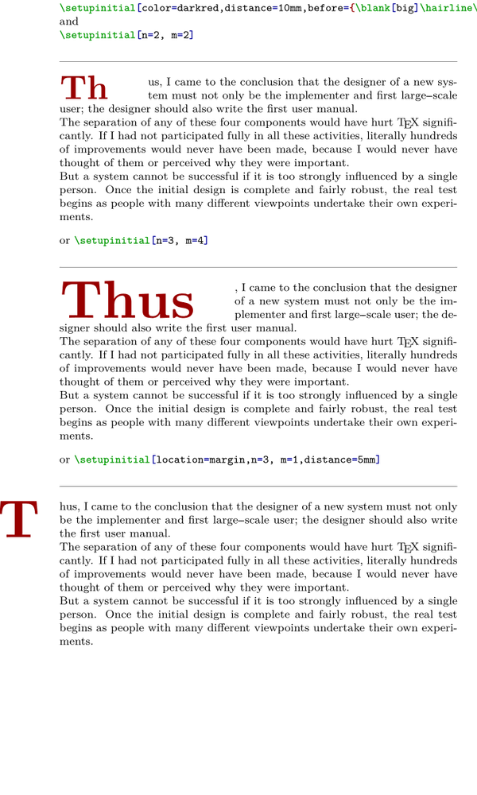
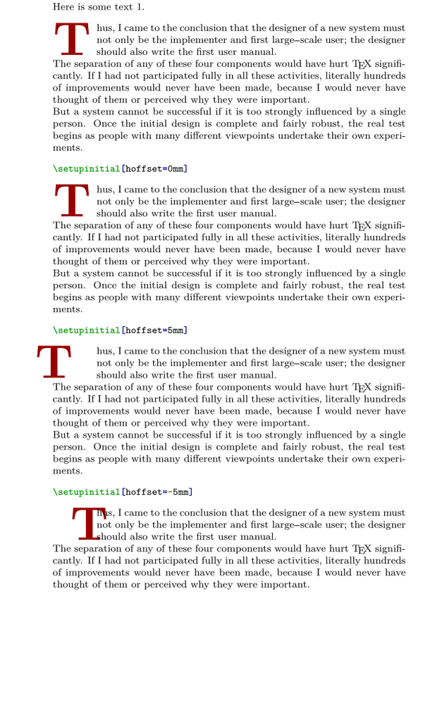
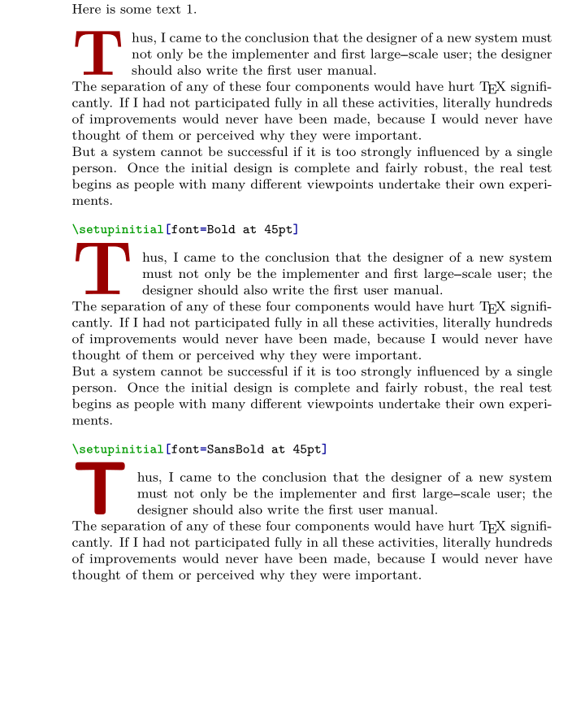
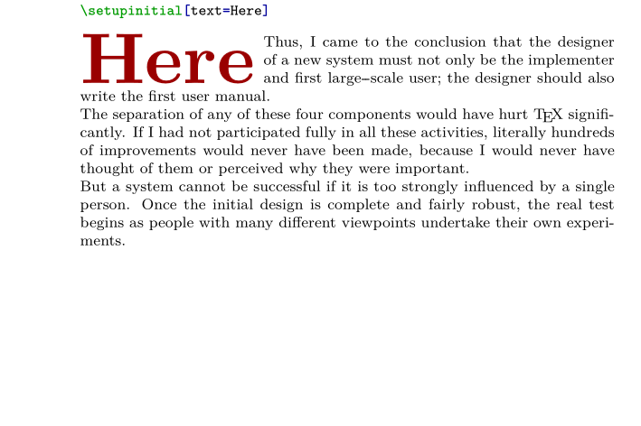
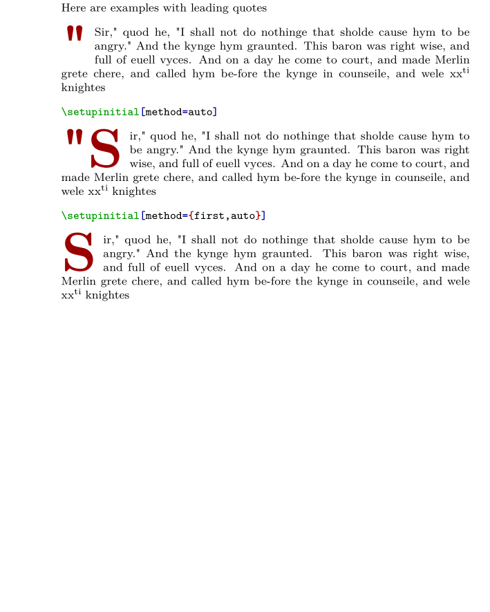

Contents
Summary
Initials (also known as drop caps, dropped caps, or versals) can be made in ConTeXt using the
\placeinitial
command.
The command \setupinitial detailed here is used to customize this decorative first letter(s) at the start of chapters, sections, paragraphs, and so forth.
Settings
| \setupinitial[...,...][...=...,...] | |
| [...,...] | name |
| n | number |
| m | number |
| before | command |
| distance | dimension |
| hoffset | dimension |
| voffset | line dimension |
| style | style command |
| color | color |
| font | font |
| text | text |
| location | margin text |
| method | first last auto none |
| Option | Explanation | ||||
|---|---|---|---|---|---|
| n |
|
||||
| m |
|
||||
| before |
|
||||
| distance |
|
||||
| hoffset |
|
||||
| voffset |
|
||||
| style |
|
||||
| color |
|
||||
| font |
|
||||
| text |
|
||||
| location |
|
||||
| method |
|
||||
Description
Examples
color, distance, before + variations on n, m , location
The following example produces an awful-looking initial, but it illustrates how some of these parameters work.
-
\definepapersize[sheet][width=120mm,height=200mm] \setuppapersize[sheet] \setuppagenumbering[location=] \setuplayout[width=100mm,backspace=15mm,topspace=0mm,header=0mm,headerdistance=0mm,footer=0mm,footerdistance=0mm] \starttext \setupinitial [color=darkred, distance=10mm, before={\blank[big]\hairline\blank[big]}] \type[option=context]{\setupinitial[color=darkred,distance=10mm,before={\blank[big]\hairline\blank[big]}]} and \type[option=context]{\setupinitial[n=2, m=2]} \setupinitial[n=2, m=2] \placeinitial \input knuth \blank[big] or \type[option=context]{\setupinitial[n=3, m=4]} \setupinitial[n=3, m=4] \placeinitial \input knuth \blank[big] or \type[option=context]{\setupinitial[location=margin,n=3, m=1,distance=5mm]} \setupinitial[location=margin,n=3, m=1,distance=5mm] \placeinitial \input knuth \stoptext
- 
hoffset
-
\definepapersize[sheet][width=120mm,height=200mm] \setuppapersize[sheet] \setuppagenumbering[location=] \setuplayout[width=100mm,backspace=15mm,topspace=0mm,header=0mm,headerdistance=0mm,footer=0mm,footerdistance=0mm] \starttext Here is some text 1. \setupinitial[color=darkred] \placeinitial \input knuth \blank[big] \type[option=context]{\setupinitial[hoffset=0mm]} \setupinitial[hoffset=0mm] \placeinitial \input knuth \blank[big] \type[option=context]{\setupinitial[hoffset=5mm]} \setupinitial[hoffset=5mm] \placeinitial \input knuth \blank[big] \type[option=context]{\setupinitial[hoffset=-5mm]} \setupinitial[hoffset=-5mm] \placeinitial \input knuth \stoptext
- 
voffset
-
\definepapersize[sheet][width=120mm,height=200mm] \setuppapersize[sheet] \setuppagenumbering[location=] \setuplayout[width=100mm,backspace=15mm,topspace=0mm,header=0mm,headerdistance=0mm,footer=0mm,footerdistance=0mm] \starttext Here is some text 1. \setupinitial[color=darkred] \placeinitial \input knuth \blank[big] \type[option=context]{\setupinitial[voffset=0mm]} \setupinitial[voffset=0mm] \placeinitial \input knuth \blank[big] \type[option=context]{\setupinitial[voffset=5mm]} \setupinitial[voffset=5mm] \placeinitial \input knuth \blank[big] \type[option=context]{\setupinitial[voffset=-5mm]} \setupinitial[voffset=-5mm] \placeinitial \input knuth \stoptext
-

font
-
\definepapersize[sheet][width=120mm,height=150mm] \setuppapersize[sheet] \setuppagenumbering[location=] \setuplayout[width=100mm,backspace=15mm,topspace=0mm,header=0mm,headerdistance=0mm,footer=0mm,footerdistance=0mm] \starttext Here is some text 1. \setupinitial[color=darkred] \placeinitial \input knuth \blank[big] \type[option=context]{\setupinitial[font=Bold at 45pt]} \setupinitial[font=Bold at 45pt] \placeinitial \input knuth \blank[big] \type[option=context]{\setupinitial[font=SansBold at 45pt]} \setupinitial[font=SansBold at 45pt] \placeinitial \input knuth \stoptext
- 
text
-
\definepapersize[sheet][width=120mm,height=80mm] \setuppapersize[sheet] \setuppagenumbering[location=] \setuplayout[width=100mm,backspace=15mm,topspace=0mm,header=0mm,headerdistance=0mm,footer=0mm,footerdistance=0mm] \starttext \type[option=context]{\setupinitial[text=Here]} \setupinitial[color=darkred,text=Here] \placeinitial \input knuth \stoptext
- 
method
The method can control whether punctuation marks are included in the drop cap
-
\definepapersize[sheet][width=120mm,height=150mm] \setuppapersize[sheet] \setuppagenumbering[location=] \setuplayout[width=100mm,backspace=15mm,topspace=0mm,header=0mm,headerdistance=0mm,footer=0mm,footerdistance=0mm] \startbuffer[merlinquote] "Sir," quod he, "I shall not do nothinge that sholde cause hym to be angry." And the kynge hym graunted. This baron was right wise, and full of euell vyces. And on a day he come to court, and made Merlin grete chere, and called hym be-fore the kynge in counseile, and wele xx\high{ti} knightes \stopbuffer \starttext Here are examples with leading quotes \setupinitial[color=darkred] \placeinitial \getbuffer[merlinquote] \blank[big] \type[option=context]{\setupinitial[method=auto]} \setupinitial[method=auto] \placeinitial \getbuffer[merlinquote] \blank[big] \type[option=context]{\setupinitial[method={first,auto}]} \setupinitial[method={first,auto}] \placeinitial \getbuffer[merlinquote] \stoptext
- 
Notes
- By Garulfo on 2020-12-12T22:46:03+0100 :
Because the space carved out for the initial is rectangular, initials work best with a font with rectangular ornaments around the letter.
- By Rik on 2021-12-16T02:10:09+0100 :
Named initials must be defined using \defineinitial.
See also
- \defineinitial
- typo-drp.mkiv
- \placeinitial
- \definefirstline to apply specific style to the whole first line, or first words
- typo-drp.lua